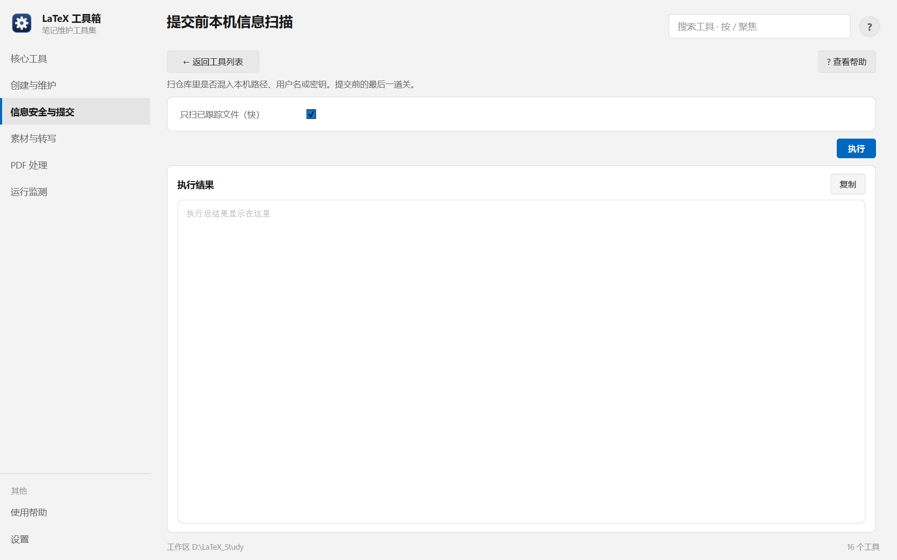

帮助目录 · 信息安全与提交
提交前最后一道关：扫一遍暂存内容里有没有本机路径、用户名、密钥、专有词。
| 面板入口 | 信息安全与提交 → 卡片「本机信息扫描」→ 执行（默认只扫已跟踪文件） |
|---|---|
| 命令行 | python tools/check_sensitive/check_sensitive.py |

只有一个勾选项；不勾就扫暂存区，勾了就扫全部已跟踪文件。
.sensitive-words.txt 里的词有没有漏进某个文件。%USERPROFILE% 之类，密钥删掉，配置文件进 .gitignore。| 项 | 说明 |
|---|---|
| 只扫已跟踪文件 | 勾上扫全部已跟踪文件（慢一些但更全）；不勾只扫 git diff --cached。 |
python tools/check_sensitive/check_sensitive.py --tracked python tools/check_sensitive/check_sensitive.py --dir 某目录
| 内容 | 位置 |
|---|---|
| 词表 | tools/check_sensitive/_sensitive-words.txt（可用 .sensitive-words.txt 逐级追加） |
| 钩子模板 | tools/check_sensitive/pre-commit |
| 钩子安装位置 | 各仓库的 .git/hooks/pre-commit |
Q：钩子明明装了，提交却没被拦？
A：钩子是靠相对路径找脚本的。工具集目录挪过位置（例如从 Tools/<工具>/ 改成 Tools/tools/<工具>/），旧钩子就找不到脚本、直接放行。重新装一次钩子即可。
Q：中文文件名被跳过
A：旧版本没关 core.quotepath，中文名被转义成八进制，拼出的路径不存在。已修；若仍出现，确认钩子与脚本是新版本。
Q：误报了某个 URL
A：https://example.com/home/... 这类曾因子串匹配被误判。规则已加左边界；仍误报就把具体串加到白名单或改词表。
Q：我能自己加要拦的词吗？
A：可以。在仓库根或任意上级目录放 .sensitive-words.txt，一行一个词，脚本会逐级合并。
Q：git commit --no-verify 会跳过吗？
A：会。这是有意的逃生口，只在你确认是误报时用。